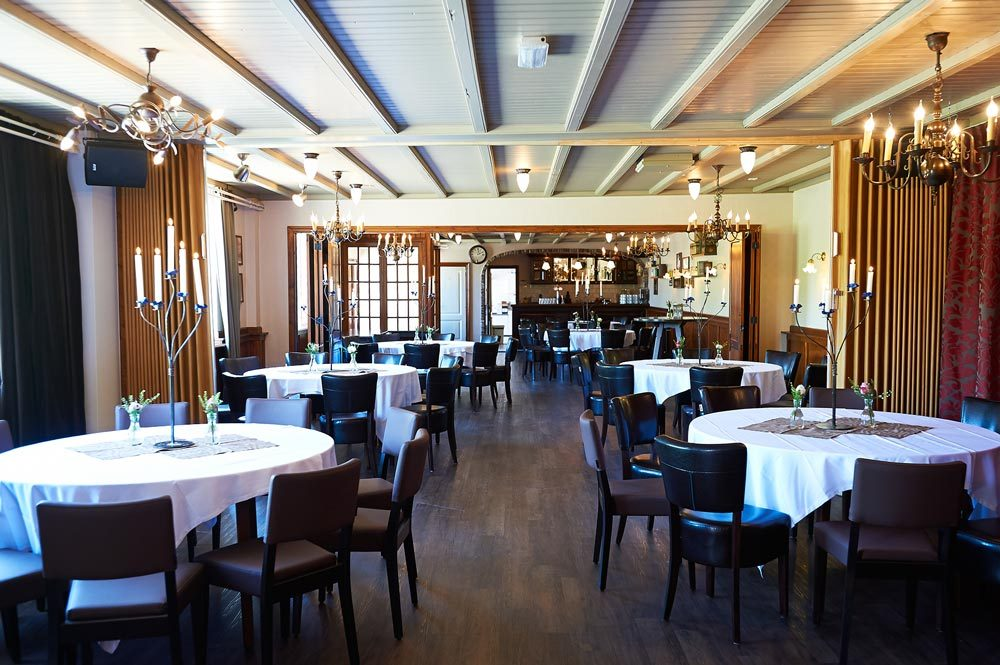
Bruiloft
De mooiste dag van uw leven. Muziek, aankleding en dagindeling stellen we samen met u op.
10 tot 200 gastenMeer info ›
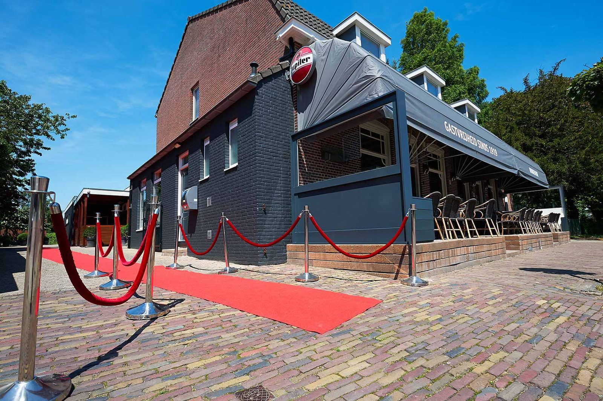
Café en feestzalen in Wouw, al vier generaties van de familie Broeren. Bruiloft, jubileum of bedrijfsfeest, voor 10 tot 200 gasten. Wij regelen alles, u hoeft alleen te genieten.
"Alles was tot in de puntjes verzorgd. Het was een topfeest waar we nog steeds met heel veel plezier op terugkijken."Familie Free, 25-jarig huwelijksfeest
Voor families en bedrijven uit Wouw, Roosendaal en Bergen op Zoom. Klik op een feest voor de mogelijkheden.

De mooiste dag van uw leven. Muziek, aankleding en dagindeling stellen we samen met u op.
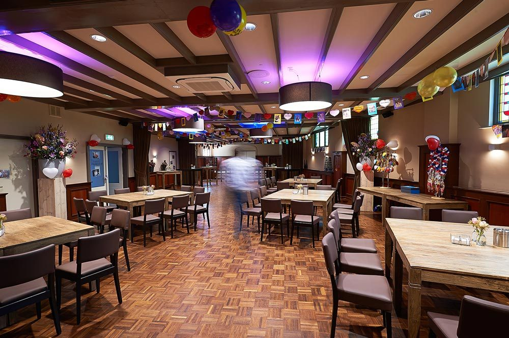
Van 25 jaar getrouwd tot Abraham of Sarah. Traditioneel feest, thema-avond of karaoke-night.
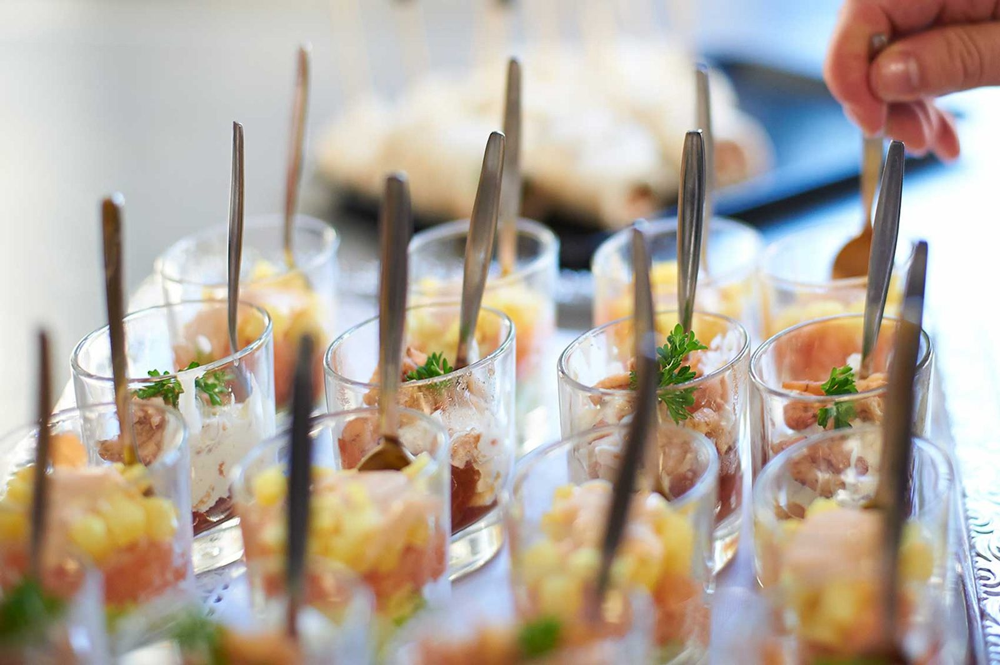
Wél iets te vieren, maar geen avondvullend feest. Met een hapje, een drankje of een walking dinner.
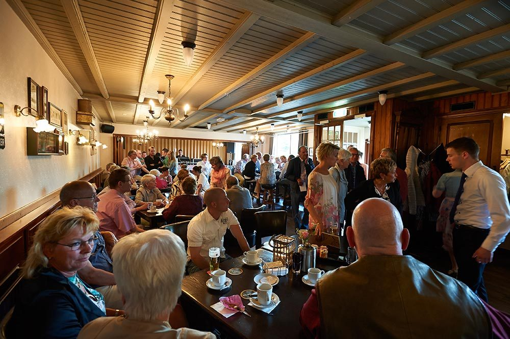
Walking dinner met muziek, een moorddiner of eerst naar buiten. Wij regelen de complete dag.
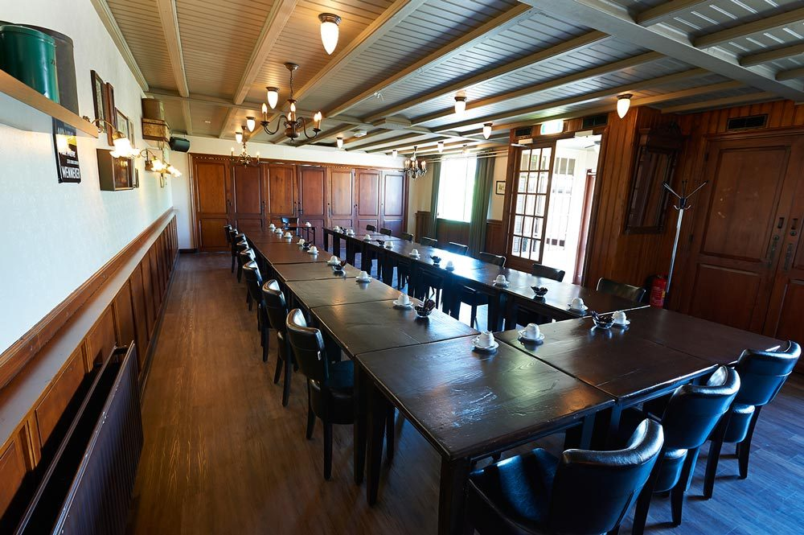
Zakelijke bijeenkomsten met beamer, whiteboards en verzorgde lunch of borrel.
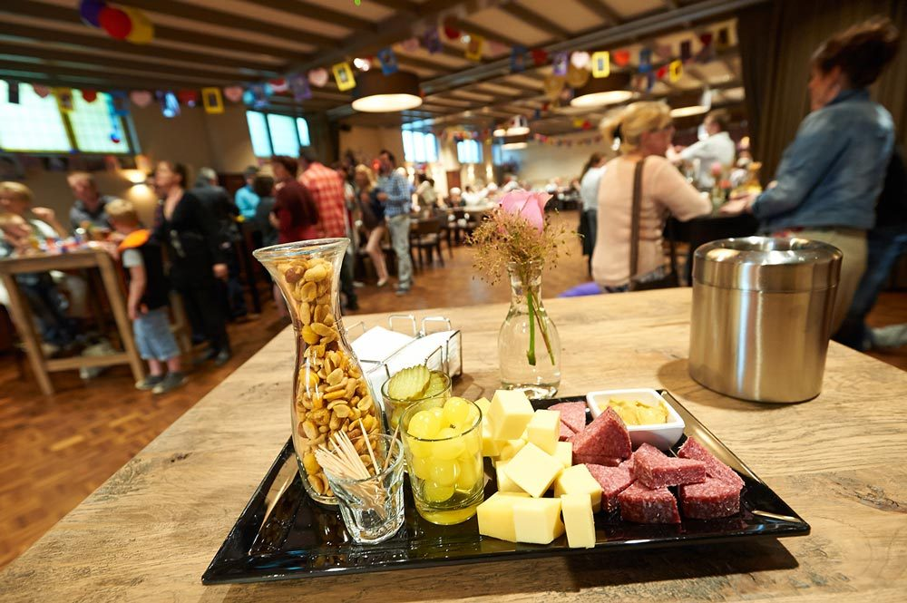
Ook bij u op de zaak: van Spaans of Italiaans tot de Hollandse pot, met ingrediënten uit de regio.
Twee zalen, in elke opstelling die u wilt: lange tafels, ronde tafels of juist een open vloer voor een feest.
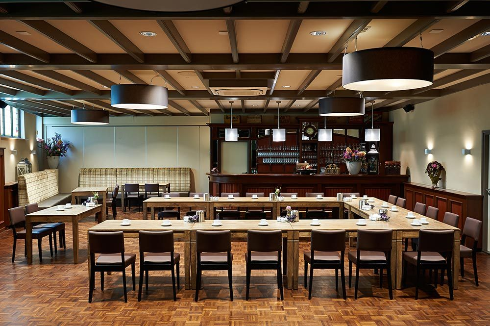
Ruime zaal met eigen bar, voor de grote feesten.
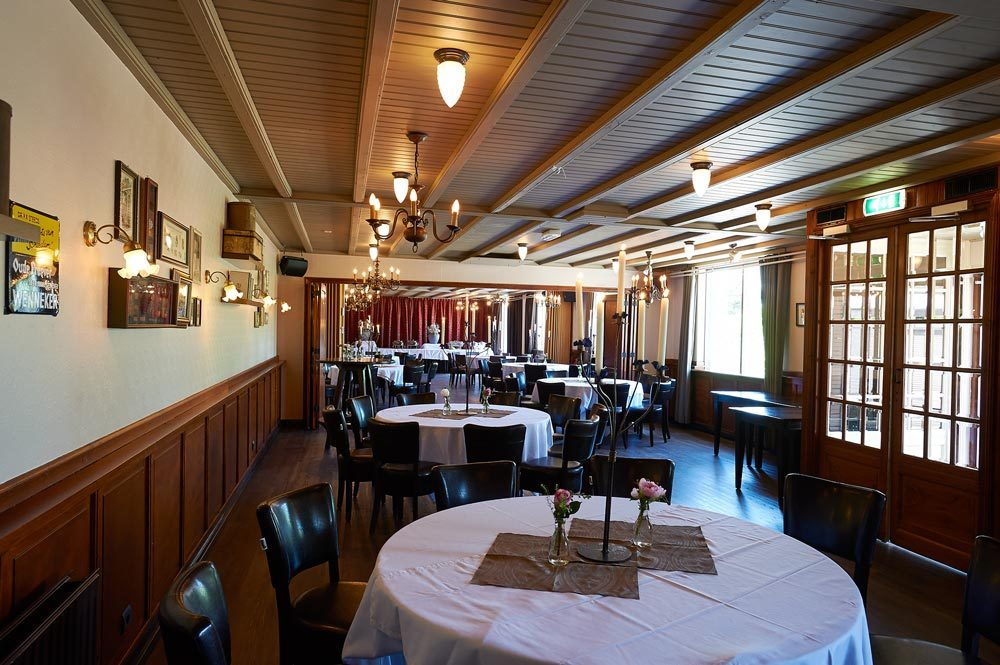
Met kroonluchters, en ronde of lange tafels naar wens.
Eerst even rondkijken? Loop virtueel door het café en de zalen ›
Altijd 5 wisselende tapbieren en een breed aanbod speciaalbieren. Iedere maand rouleert ons bier van de maand: een Chimay, een Petrus of toch een Karmeliet. In het café of lekker in de zon op het terras.
Fiets- of wandeltocht gemaakt? Kom langs voor een broodje, een stuk taart of een ijsje. Kinderen zijn van harte welkom.
Maurice Broeren is sinds 1996 SVH Meesterschenker. Tijdens de proeverij vertelt hij over het brouwproces en proeft u trappisten, abdijbieren, tripels en meer.
Borrelen Bij De Broeren: iedere eerste zaterdag van de maand vanaf 16:30. Wij zorgen voor de hapjes, jullie voor de gezelligheid.
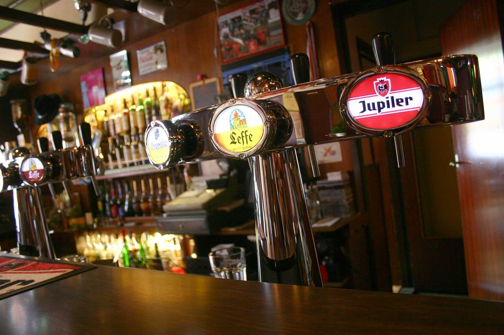
"Overal wordt voor gezorgd: de microfoon staat klaar voor de personen die een speech willen geven, het buffet is meer dan prima en het personeel is ontzettend gastvrij; ze hebben oog voor alles."
Mevrouw Vlamings · Stichting Openbaar Basisonderwijs West-Brabant"Op het gebied van gastvrijheid krijg je echt een warm welkom bij Donkenhof. Alles was top geregeld, zowel met de externe partij Crazy Piano's als met het buffet, dat op chique wijze werd opgediend."
Lianne van Wezel · Rabobank Zuidwest-Brabant"We willen jullie nogmaals bedanken voor de geweldige avond! Mede dankzij jullie goede zorgen kijken we terug op een topavond! Wij hebben veel complimenten mogen ontvangen over de bediening en de hapjes."
Johan en Jolanda · 25-jarig huwelijksfeest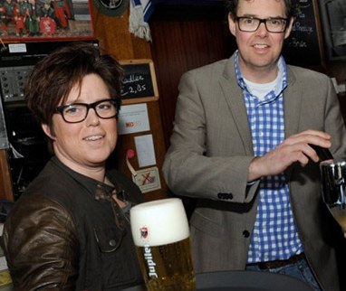
Op 8 september 1919 kocht Petrus Broeren het pand aan de Roosendaalsestraat. Sindsdien is het café in de familie gebleven. Nu runnen Maurice Broeren en Jannine Hermus de zaak, de vierde generatie.
U merkt dat aan de korte lijnen en het persoonlijke contact: u spreekt de eigenaren zelf, van de eerste afspraak tot de avond van uw feest.
"Ons voornaamste doel is al het werk voor u uit handen nemen en de dag te laten verlopen zoals u dat wilt."Jannine Broeren, mede-eigenaresse
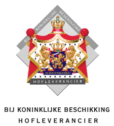
Vertel ons wat u wilt vieren. We nemen snel contact met u op om de mogelijkheden te bespreken.
| Maandag | 19:30 – 00:00 |
| Dinsdag en woensdag | Gesloten |
| Donderdag | 19:00 – 02:00 |
| Vrijdag | 19:00 – 02:00 |
| Zaterdag | 14:00 – 02:00 |
| Zondag | 10:30 – 19:00 |
Voor feesten, partijen en vergaderingen zijn we alle dagen beschikbaar.
Roosendaalsestraat 61
4724 AB Wouw
(0165) 30 12 88 · info@donkenhof.nl
Route plannen ›
We zoeken allround horecamedewerkers, fulltime en parttime. Ervaring is niet nodig, een gastvrije instelling wel. Stuur ons een berichtje ›